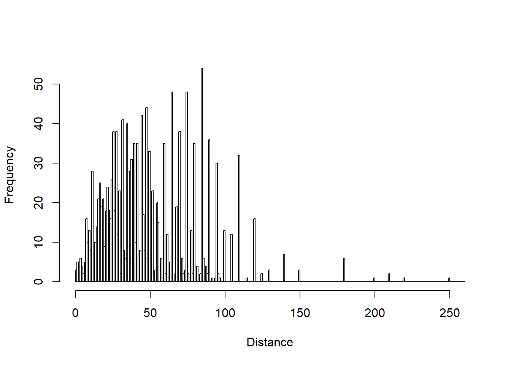
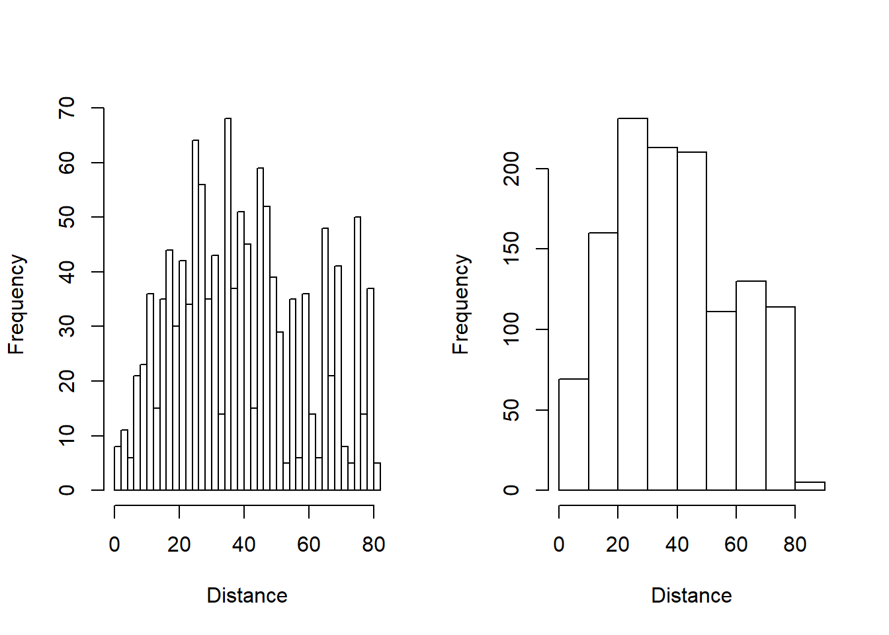
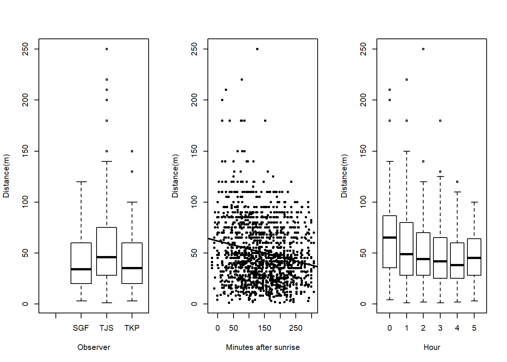
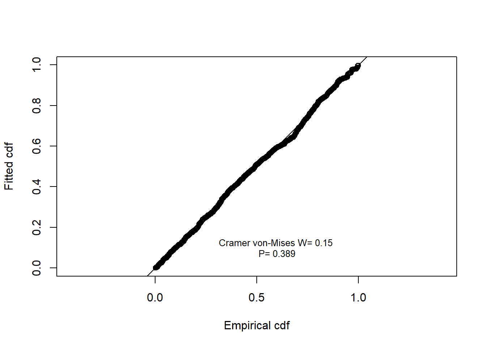
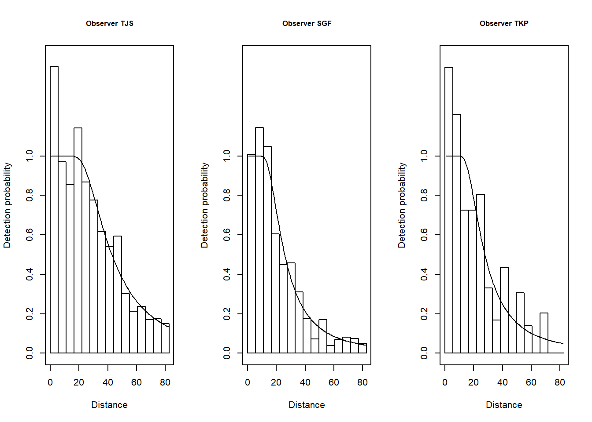

Amakihi Distance Sampling Exercise - Answer Key
Joe Kolowski, Ph.D.
Project Description and Context

In this module, you will import point transect data on individual Amakihi (Hemignathus virens), a common type of honeycreeper in Hawaii. These data were collected as part of a larger translocation experiment, where data was collected on a suite of bird species (Fancy et al. 1997). Point transect surveys were performed at seven survey periods between July 1992 and April 1995. There were 41 point-count stations, though they were not all surveyed in some survey periods. We’ll be using this as an example where the use of covariates is appropriate. There are 3 potential covariates available in this case study: Observer ID (OBs), and time in minutes (MAS) and hours (HAS) after sunrise for observations. The goal of the project is to calculate the most unbiased and precise estimate of density of this species within each study period. The study is used as an illustrative example in Marques et al. (2007), and this is one of the Sample Projects provided with the program DISTANCE.
Exercise Objectives
- Continue to practice with importing and exploring data for distance sampling analysis
- Continue to practice with the use of covariates in analyzing distance sampling data
- Assess which combination of covariates is most supported in modelling the detection process in this study
- Independently complete a full analysis work flow, including model selection and results interpretation, to determine an unbiased density of Amakihi
- If you have time, explore survey period to see if each survey period should be analysed independently to better assess overall density of Amakihi
Libraries/Setup
library(Distance)Data Import and Exploration
STEP1: Let’s first bring in the data, which exists as a .csv file called “amakihi.csv”
library(Distance)
amakihiData <- read.csv("https://www.dropbox.com/s/9b4mgh36p7p1ynx/amakihi.csv?dl=1")STEP2: As always, you should begin by exploring the raw data. Use functions to view the data, look at its structure, and summarize the data.
Q1. What is the maximum distance at which a bird was observed?
A1. With the summary function we can see the maximum distance observation was at 250 meters. We could also use max(amakihiData$distance).
head(amakihiData)## Study.Area Region.Label Area Sample.Label Effort distance OBS MAS HAS
## 1 Kana Jul-92 0 1 1 40 TJS 50 1
## 2 Kana Jul-92 0 1 1 60 TJS 50 1
## 3 Kana Jul-92 0 1 1 45 TJS 50 1
## 4 Kana Jul-92 0 1 1 100 TJS 50 1
## 5 Kana Jul-92 0 1 1 125 TJS 50 1
## 6 Kana Jul-92 0 1 1 120 TJS 50 1str(amakihiData)## 'data.frame': 1487 obs. of 9 variables:
## $ Study.Area : Factor w/ 1 level "Kana": 1 1 1 1 1 1 1 1 1 1 ...
## $ Region.Label: Factor w/ 7 levels "Apr-93","Apr-94",..: 6 6 6 6 6 6 6 6 6 6 ...
## $ Area : int 0 0 0 0 0 0 0 0 0 0 ...
## $ Sample.Label: int 1 1 1 1 1 1 1 1 2 2 ...
## $ Effort : int 1 1 1 1 1 1 1 1 1 1 ...
## $ distance : int 40 60 45 100 125 120 140 80 65 90 ...
## $ OBS : Factor w/ 4 levels "","SGF","TJS",..: 3 3 3 3 3 3 3 3 3 3 ...
## $ MAS : int 50 50 50 50 50 50 50 50 64 64 ...
## $ HAS : int 1 1 1 1 1 1 1 1 1 1 ...summary(amakihiData)## Study.Area Region.Label Area Sample.Label Effort
## Kana:1487 Apr-93:274 Min. :0 Min. : 1.0 Min. :1
## Apr-94:148 1st Qu.:0 1st Qu.: 9.0 1st Qu.:1
## Apr-95:250 Median :0 Median :19.0 Median :1
## Dec-92:160 Mean :0 Mean :19.6 Mean :1
## Jan-94:262 3rd Qu.:0 3rd Qu.:29.5 3rd Qu.:1
## Jul-92:183 Max. :0 Max. :41.0 Max. :1
## Jul-93:210
## distance OBS MAS HAS
## Min. : 1.00 : 2 Min. :-18.0 Min. :0.000
## 1st Qu.: 27.00 SGF: 229 1st Qu.: 78.0 1st Qu.:1.000
## Median : 45.00 TJS:1183 Median :137.0 Median :2.000
## Mean : 50.67 TKP: 73 Mean :140.9 Mean :2.344
## 3rd Qu.: 70.00 3rd Qu.:199.0 3rd Qu.:3.000
## Max. :250.00 Max. :307.0 Max. :5.000
## NA's :2 NA's :2 NA's :2Note that our observer covariate is already recognized as a factor in R, which is what we want. Hours after sunrise could be treated either as a factor, if we want each hour to exist as an independent sample, or we could leave it as is, and its relationship with distance will be assessed in a linear fashion (i.e. detection function parameters will consistently increase or decrease with hour after sunrise).
STEP3: Plot the distance data as a histogram, trying a range of different bin sizes to explore the raw data.
Q2. Do you see any potential problems or issues with the data? If so what are they?
hist(
amakihiData$distance,
breaks = seq(0, 260),
main = "",
xlab = "Distance"
)
A2. There are a few things to consider when looking at our raw data. First, there are a series of long-distance observations which will be challenging to fit to a detection function, and which aren’t important to the analysis. They should be truncated. Second, while there is a clear decline in observation frequency after 50m, there is a series of observations at further distances which extend the potential peak in the data. This could be the result of differences across observers, or time periods. Third, there do appear to be rounding errors at certain distances, but there is not much we can do to address this.
STEP4: Looking at the data with different bin sizes, decide on a reasonable truncation distance or %.
Q3. What did you decide and why?
A3. One could decide to truncate the furthest 10% of observations, or we could look at the data and select a distance which removes the bulk of these sporadic far observations. The case study in the Marques paper truncates at 82.5 meters, so that is what I’ll proceed with here, but this is not necessarily the only solution. We can look at the data with a few bin sizes, using our new truncation level. We can still see an issue with a second peak in observation frequencies, but perhaps our covariates will help to account for this.
par(mfrow=c(1,2))
hist(
amakihiData$distance[amakihiData$distance < 82.5],
breaks = 33,
main = "",
xlab = "Distance"
)
hist(
amakihiData$distance[amakihiData$distance < 82.5],
breaks = 10,
main = "",
xlab = "Distance"
)
Let’s now look at our 3 covariates to see how they relate to observed distances. Boxplots are best in this case for factor covariates, regular scatterplots for continuous variables.
STEP5: Create boxplots or scatterplots of our 3 covariates, with distance on the y axes, to look at how these covariates may influence the detection function.
Q4: Which observer tends to observe birds at the longer distances?
A4: TJS
Q5: Do observation distances tend to increase or decrease as time after sunrise increases?
A5: As you go further from sunrise, average observation distance tends to decline.
par(mfrow=c(1,3))
boxplot(amakihiData$distance ~ amakihiData$OBS,
xlab = "Observer",
ylab = "Distance(m)")
plot(
amakihiData$MAS,
amakihiData$distance,
xlab = "Minutes after sunrise",
ylab = "Distance(m)",
pch = 19,
cex = 0.6
)
abline(reg = lm(amakihiData$distance ~ amakihiData$MAS),
lwd = 2)
boxplot(amakihiData$distance ~ amakihiData$HAS,
xlab = "Hour",
ylab = "Distance(m)")
Note that we are entertaining three possible covariates in our detection function: observer, hours and minutes since sunrise. Observer and hours are variables that take on values between 1 and 3 in the case of observer, and 1 to 6 in the case of hours. However minutes can take on values from -9 (detections before sunrise) to >300. The disparity in scales of measure between MAS and the other candidate covariates can lead to difficulties in the performance of the optimiser fitting the detection functions in R. The solution to the difficulty is to scale MAS such that it is on a scale (~1 to 5) comparable with the other covariates.
Dividing all the MAS measurements by the standard deviation of those measurements accomplishes the desired compaction of the range of the MAS covariate without changing the shape of the distribution of MAS values. Execute the following code to do this.
amakihiData$MAS <- amakihiData$MAS / sd(amakihiData$MAS, na.rm = TRUE)Basic Conventional Distance Sampling Analysis of Amakihi Data - no covariates
It’s always good practice to begin with a basic analysis of your data as a starting point, even if we know we want to explore various covariates.
STEP6: Using your selected truncation amount, run the 4 common detection function models on this data set, with no covariates. These include: Half-normal cosine, Half-normal hermite, Hazard-rate simply polynomial, and Uniform cosine. Compare the AIC values of these 4 models.
Remember that you need to think about conversion units here. We want our output to be in hectares (100m by 100m) but our distance units are in meters. Be sure to select an appropriate value for the convert.units argument.
amakihi.hn.herm <- ds(
amakihiData,
truncation = 82.5,
transect = "point",
key = "hn",
adjustment = "herm",
convert.units = .01
)
AIC(amakihi.hn.herm)## 'log Lik.' 10804.51 (df=3)amakihi.hn.cos <- ds(
amakihiData,
truncation = 82.5,
transect = "point",
key = "hn",
adjustment = "cos",
convert.units = .01
)
AIC(amakihi.hn.cos)## 'log Lik.' 10799.1 (df=5)amakihi.uni.cos <- ds(
amakihiData,
truncation = 82.5,
transect = "point",
key = "unif",
adjustment = "cos",
convert.units = .01
)
AIC(amakihi.uni.cos)## 'log Lik.' 10802.77 (df=2)amakihi.haz.simp <- ds(
amakihiData,
truncation = 82.5,
transect = "point",
key = "hr",
adjustment = "poly",
convert.units = .01
)
AIC(amakihi.haz.simp)## 'log Lik.' 10807.55 (df=2)summary1 <-
summarize_ds_models(amakihi.haz.simp,
amakihi.uni.cos,
amakihi.hn.cos,
amakihi.hn.herm,
output = "plain")library(knitr)kable(summary1, format = "markdown")| Model | Key function | Formula | C-vM \(p\)-value | Average detectability | se(Average detectability) | Delta AIC | |
|---|---|---|---|---|---|---|---|
| 3 | amakihi.hn.cos | Half-normal with cosine adjustment terms of order 2,3,4,5 | ~1 | 0.5573050 | 0.2816680 | 0.0374515 | 0.000000 |
| 2 | amakihi.uni.cos | Uniform with cosine adjustment terms of order 1,2 | NA | 0.4395449 | 0.2883563 | 0.0130070 | 3.668929 |
| 4 | amakihi.hn.herm | Half-normal with Hermite polynomial adjustment terms of order 4,6 | ~1 | 0.4389345 | 0.2878194 | 0.0168241 | 5.404129 |
| 1 | amakihi.haz.simp | Hazard-rate | ~1 | 0.3344042 | 0.3285785 | 0.0201310 | 8.447904 |
Q6: Based on AIC values, which of these 4 models best fits the data?
A6: Based on AIC values the half-normal cosine model with an AIC value of 10799.1 fits the data best.
STEP7: Look at the summary results of your best model. Then plot the results of the best model to look at the fit of the detection function.
Q7: Do you see any issues with the detection function?
summary(amakihi.hn.cos)##
## Summary for distance analysis
## Number of observations : 1243
## Distance range : 0 - 82.5
##
## Model : Half-normal key function with cosine adjustment terms of order 2,3,4,5
##
## Strict monotonicity constraints were enforced.
## AIC : 10799.1
##
## Detection function parameters
## Scale coefficient(s):
## estimate se
## (Intercept) 3.567027 0.02196772
##
## Adjustment term coefficient(s):
## estimate se
## cos, order 2 0.22318565 0.05009085
## cos, order 3 -0.15644024 0.04238818
## cos, order 4 0.13645497 0.04225339
## cos, order 5 -0.05150864 0.04007986
##
## Estimate SE CV
## Average p 0.281668 0.03745147 0.1329632
## N in covered region 4412.996953 596.27915804 0.1351189
##
## Summary statistics:
## Region Area CoveredArea Effort n k ER se.ER
## 1 Apr-93 87.66811 87.66811 41 231 41 5.634146 0.3289972
## 2 Apr-94 87.66811 51.31792 24 141 24 5.875000 0.2712859
## 3 Apr-95 87.66811 85.52986 40 212 40 5.300000 0.4938078
## 4 Dec-92 87.66811 85.52986 40 140 40 3.500000 0.3121472
## 5 Jan-94 87.66811 87.66811 41 172 41 4.195122 0.3088521
## 6 Jul-92 87.66811 87.66811 41 146 41 3.560976 0.1945877
## 7 Jul-93 87.66811 85.52986 40 201 40 5.025000 0.2984737
## 8 Total 613.67675 570.91182 267 1243 267 4.655431 0.1361385
## cv.ER
## 1 0.05839344
## 2 0.04617632
## 3 0.09317129
## 4 0.08918492
## 5 0.07362173
## 6 0.05464449
## 7 0.05939775
## 8 0.02924294
##
## Density:
## Label Estimate se cv lcl ucl df
## 1 Apr-93 9.354764 1.3585038 0.1452205 7.045037 12.421740 818.8505
## 2 Apr-94 9.754670 1.3730009 0.1407532 7.410110 12.841050 871.9354
## 3 Apr-95 8.799958 1.4287429 0.1623579 6.407001 12.086663 318.0522
## 4 Dec-92 5.811293 0.9304088 0.1601036 4.249957 7.946228 350.4958
## 5 Jan-94 6.965452 1.0586426 0.1519848 5.176413 9.372808 540.6522
## 6 Jul-92 5.912535 0.8499509 0.1437540 4.465509 7.828462 898.3467
## 7 Jul-93 8.343356 1.2150201 0.1456273 6.278305 11.087641 786.7813
## 8 Total 7.848861 1.0635138 0.1354991 6.024051 10.226444 1323.1052plot(amakihi.hn.cos, main = "Amakihi data pooled, \nhalf-normal cosine detection function",
pdf = T)
A7: You can see from the output of the model run that the half-normal cosine has 4 adjustment parameters and a total of 5 parameters. This is a very complex detection function, primarily because it is attempting to account for the second peak in observations, where a standard/appropriate function should be monotonically decreasing. Hopefully our covariates will help address this.
Multiple Covariate Distance Sampling (MCDS) of Amakihi Data
Let’s try now to incorporate our 3 covariates into our modeling. We cannot assume that our best model from above will continue to be the best detection function, so we need to investigate not only different combinations of our covariates, but also different key functions. In R, due to it’s optimization engine, models with covariates and adjustment terms do not converge. Thus, the package prevents us from using adjustment terms. This simplifies things here, but is a disadvantage of running these models in R vs. the Windows program DISTANCE.
In any case, let’s first convert HAS to a factor covariate, since the graph of this variable indicates the trend in detection frequencies may not be linear as hours proceed from sunrise.
amakihiData$HAS <- as.factor(amakihiData$HAS)
STEP8: Test the following models. Combining them with the 4 models we’ve run above for a total of 14 models, compare them with AIC, as well as the Cramer von-Mises test (using the summarize_ds_models function).
- OBS (Half-normal)
- OBS (Hazard rate)
- MAS (Half-normal)
- MAS (Hazard rate)
- HAS (Half-normal)
- HAS (Hazard rate)
- OBS + MAS (Half-normal)
- OBS + MAS (Hazard rate)
- OBS + HAS (Half-normal)
- OBS + HAS (Hazard rate)
amakihi.hn.obs <- ds(
amakihiData,
truncation = 82.5,
transect = "point",
key = "hn",
formula = ~ OBS,
convert.units = .01
)
amakihi.hr.obs <- ds(
amakihiData,
truncation = 82.5,
transect = "point",
key = "hr",
formula = ~ OBS,
convert.units = .01
)
amakihi.hn.MAS <- ds(
amakihiData,
truncation = 82.5,
transect = "point",
key = "hn",
formula = ~ MAS,
convert.units = .01
)
amakihi.hr.MAS <- ds(
amakihiData,
truncation = 82.5,
transect = "point",
key = "hr",
formula = ~ MAS,
convert.units = .01
)
amakihi.hn.HAS <- ds(
amakihiData,
truncation = 82.5,
transect = "point",
key = "hn",
formula = ~ HAS,
convert.units = .01
)
amakihi.hr.HAS <- ds(
amakihiData,
truncation = 82.5,
transect = "point",
key = "hr",
formula = ~ HAS,
convert.units = .01
)
amakihi.hn.obs_HAS <- ds(
amakihiData,
truncation = 82.5,
transect = "point",
key = "hn",
formula = ~ OBS + HAS,
convert.units = .01
)
amakihi.hr.obs_HAS <- ds(
amakihiData,
truncation = 82.5,
transect = "point",
key = "hr",
formula = ~ OBS + HAS,
convert.units = .01
)
amakihi.hn.obs_MAS <- ds(
amakihiData,
truncation = 82.5,
transect = "point",
key = "hn",
formula = ~ OBS + MAS,
convert.units = .01
)
amakihi.hr.obs_MAS <- ds(
amakihiData,
truncation = 82.5,
transect = "point",
key = "hr",
formula = ~ OBS + MAS,
convert.units = .01
)
summary2 <-
summarize_ds_models(
amakihi.hn.herm,
amakihi.haz.simp,
amakihi.hn.cos,
amakihi.uni.cos,
amakihi.hn.obs,
amakihi.hr.obs,
amakihi.hn.MAS,
amakihi.hr.MAS,
amakihi.hn.HAS,
amakihi.hr.HAS,
amakihi.hn.obs_HAS,
amakihi.hr.obs_HAS,
amakihi.hn.obs_MAS,
amakihi.hr.obs_MAS,
output = "plain"
)
kable(summary2, format = "markdown")| Model | Key function | Formula | C-vM \(p\)-value | Average detectability | se(Average detectability) | Delta AIC | |
|---|---|---|---|---|---|---|---|
| 14 | amakihi.hr.obs_MAS | Hazard-rate | ~OBS + MAS | 0.3890855 | 0.3186670 | 0.0201472 | 0.000000 |
| 6 | amakihi.hr.obs | Hazard-rate | ~OBS | 0.2707237 | 0.3142730 | 0.0204413 | 1.072908 |
| 12 | amakihi.hr.obs_HAS | Hazard-rate | ~OBS + HAS | 0.4502642 | 0.3197341 | 0.0200473 | 5.759905 |
| 3 | amakihi.hn.cos | Half-normal with cosine adjustment terms of order 2,3,4,5 | ~1 | 0.5573050 | 0.2816680 | 0.0374515 | 21.725549 |
| 11 | amakihi.hn.obs_HAS | Half-normal | ~OBS + HAS | 0.0112111 | 0.3405084 | 0.0112599 | 23.705350 |
| 4 | amakihi.uni.cos | Uniform with cosine adjustment terms of order 1,2 | NA | 0.4395449 | 0.2883563 | 0.0130070 | 25.394478 |
| 13 | amakihi.hn.obs_MAS | Half-normal | ~OBS + MAS | 0.0076156 | 0.3429623 | 0.0111657 | 26.498966 |
| 1 | amakihi.hn.herm | Half-normal with Hermite polynomial adjustment terms of order 4,6 | ~1 | 0.4389345 | 0.2878194 | 0.0168241 | 27.129677 |
| 8 | amakihi.hr.MAS | Hazard-rate | ~MAS | 0.5579939 | 0.3335896 | 0.0201104 | 28.253419 |
| 2 | amakihi.haz.simp | Hazard-rate | ~1 | 0.3344042 | 0.3285785 | 0.0201310 | 30.173452 |
| 10 | amakihi.hr.HAS | Hazard-rate | ~HAS | 0.5802562 | 0.3326671 | 0.0200215 | 30.843087 |
| 5 | amakihi.hn.obs | Half-normal | ~OBS | 0.0032978 | 0.3462978 | 0.0111582 | 39.127963 |
| 9 | amakihi.hn.HAS | Half-normal | ~HAS | 0.0096201 | 0.3472573 | 0.0112909 | 47.655397 |
| 7 | amakihi.hn.MAS | Half-normal | ~MAS | 0.0072817 | 0.3493128 | 0.0112744 | 49.161526 |
Q8: Which model is best and why?
A8: The model with both OBS and MAS is the best, with a hazard rate key function.
STEP9:Review the summary results of your best model.
summary(amakihi.hr.obs_MAS)##
## Summary for distance analysis
## Number of observations : 1243
## Distance range : 0 - 82.5
##
## Model : Hazard-rate key function
## AIC : 10777.38
##
## Detection function parameters
## Scale coefficient(s):
## estimate se
## (Intercept) 3.21660465 0.12115244
## OBSTJS 0.51887432 0.09630820
## OBSTKP 0.09831049 0.17503007
## MAS -0.06595015 0.03655281
##
## Shape coefficient(s):
## estimate se
## (Intercept) 0.885308 0.06315655
##
## Estimate SE CV
## Average p 0.318667 0.02014721 0.06322341
## N in covered region 3900.624101 263.72270841 0.06761039
##
## Summary statistics:
## Region Area CoveredArea Effort n k ER se.ER
## 1 Apr-93 87.66811 87.66811 41 231 41 5.634146 0.3289972
## 2 Apr-94 87.66811 51.31792 24 141 24 5.875000 0.2712859
## 3 Apr-95 87.66811 85.52986 40 212 40 5.300000 0.4938078
## 4 Dec-92 87.66811 85.52986 40 140 40 3.500000 0.3121472
## 5 Jan-94 87.66811 87.66811 41 172 41 4.195122 0.3088521
## 6 Jul-92 87.66811 87.66811 41 146 41 3.560976 0.1945877
## 7 Jul-93 87.66811 85.52986 40 201 40 5.025000 0.2984737
## 8 Total 613.67675 570.91182 267 1243 267 4.655431 0.1361385
## cv.ER
## 1 0.05839344
## 2 0.04617632
## 3 0.09317129
## 4 0.08918492
## 5 0.07362173
## 6 0.05464449
## 7 0.05939775
## 8 0.02924294
##
## Density:
## Label Estimate se cv lcl ucl df
## 1 Apr-93 6.732402 0.5598067 0.08315111 5.714962 7.930978 172.1478
## 2 Apr-94 7.322282 0.6146889 0.08394772 6.206334 8.638887 180.9460
## 3 Apr-95 7.659762 0.7527262 0.09827018 6.307886 9.301365 115.3644
## 4 Dec-92 5.769796 0.7369173 0.12771981 4.486150 7.420740 130.8295
## 5 Jan-94 4.784721 0.4626799 0.09669944 3.952399 5.792320 114.5675
## 6 Jul-92 7.275317 1.0825287 0.14879471 5.439986 9.729849 522.2012
## 7 Jul-93 8.520228 1.0150497 0.11913410 6.739310 10.771767 156.8543
## 8 Total 6.866358 0.4650800 0.06773314 6.012980 7.840851 1448.8637Q9: What is the final overall density estimate, per hectare, from your best model? Include the coefficient of variation, and the confidence interval.
A9: The density estimate from the best model is 6.87 birds per hectare with a coefficient of variation of 6.8%. The 95% CI stretches from 6.01 to 7.84. Note that this is a much smaller CV and confidence interval than we had from our basic model with no covariates.
It should be noted here that the models fitted with the half-normal function are actually much better when fitted in the program DISTANCE. This is because the model optimization engines used in DISTANCE are better, and they were able to fit these models WITH adjustment terms. In the end, the hazard rate models, even without adjustment terms, were still better than the half-normal models in all cases, but if running these models in DISTANCE, the AIC values of the half-normal models would be much lower.
STEP10: Use the ddf.gof function to calculate various diagnostics for your best model. Using code from the demo, plot the QQplot and include the Cramer von-Mises test results on the plot
amakihi.hr.obs_Mas.fit <- ddf.gof(amakihi.hr.obs_MAS$ddf)
message <-
paste(
"Cramer von-Mises W=",
round(amakihi.hr.obs_Mas.fit$dsgof$CvM$W, 3),
"\nP=",
round(amakihi.hr.obs_Mas.fit$dsgof$CvM$p, 3)
)
text(0.6, 0.1, message, cex = 0.8)
Q10: Do you see any reason to be cautious about our final model here, or do we have evidence that this is a reasonably good fit of the data?
A10: The QQ plot, and the lack of significance of the CvM test are both indicating that our model is a reasonable fit to the data.
STEP11: Let’s graph our detection functions for each observer. Look in the help menu for the function plot.ds and figure out how to use the subset argument to graph the detection function for each of the three observers separately. Label the main titles with the names of the observers, and set their y axes to go from 0 to 1.5 so we can compare them easily. For some reason the PDF =T does not work in these graphs, so you can graph the standard detection functions here (that is, use the default graph).
par(mfrow=c(1,3))
plot(
amakihi.hr.obs_MAS,
subset = OBS == "TJS",
nc = 15,
ylim = c(0, 1.5),
main = "Observer TJS",
showpoints = F
)
plot(
amakihi.hr.obs_MAS,
subset = OBS == "SGF",
nc = 15,
ylim = c(0, 1.5),
main = "Observer SGF",
showpoints = F
)
plot(
amakihi.hr.obs_MAS,
subset = OBS == "TKP",
nc = 15,
ylim = c(0, 1.5),
main = "Observer TKP",
showpoints = F
)
Extra Practice - Investigating Survey Periods as Strata
Look again at the summary of your best model and focus on the encounter rate (ER) for each survey time period. Remember that we have 7 different survey periods during which field data was collected. You’ll see that the encounter rate varies quite a bit across these survey periods. In all the analyses above, we’ve created pooled detection functions across all these survey periods, assuming that detection processes were more or less similar across these periods. But this may not be the case. For example encounter rates in December 1992 and July 1992 were substantially lower than during other periods. Using the demo exercise (House Wren) as a guide, where survey blocks were analyzed as separate strata, analyze the Amakihi data again, this time keeping each survey period as a separate strata. For simplicity, try only the half-normal cosine, and the hazard rate simple polynomial models for each survey period. In the end, sum the AIC values of your final 7 models (one for each survey period) and compare with the AIC value of our initial model above which pooled these survey periods (half-normal cosine, no covariates) to see if it is worth estimating separate detection functions for each survey period. Think about how you might go about calculating a final global density estimate when each survey period is analyzed separately like this.